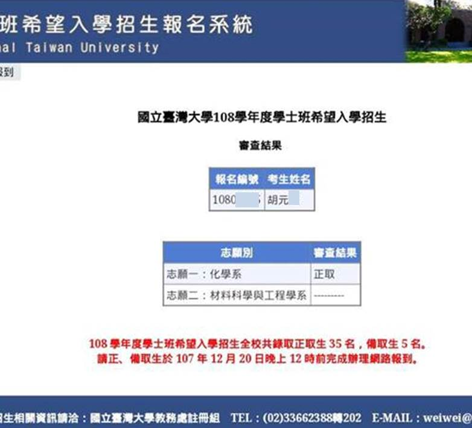

臺灣大學 化學系希望入學
高雄市前鎮高中 胡元理
lovejksad@gmail.com
嗨！大家好
今天要來分享一下特殊選材其中的一項
其實這個部分不多人知道所以我想分享給大家
「台大希望入學」
為什麼要強調台大呢？
因為這個企劃只有台大有
不過清華大學有一個叫拾穗計畫，不過那部分我沒有鑽研，有待其他大神補充
在10/15我接獲了班導師的通知說我有資格參加校內的初選
11天的校內刺激選拔，終於在10/25通知我可以開始準備資料了
不過...
10/28截止啊！
我只有四天時間準備
10/28截止前我終於把自己的資料都上傳
需要什麼資料我下面會仔細講
其實我成績很差
所以上榜根本是連想都沒想的結果！
經過了4天的準備
1個多月的等待
終於在12/12收到了這個！！

那我現在就來開始分享準備的資料跟心得吧
以下正文
這個計畫是尋找弱勢的環境中逆境求學，抱有服務眾人及孝順的心，透過個人申請以及登記分發錄取台大機會較小，但透過希望入學錄取後「有辦法畢業」的學生，希望他們錄取台大畢業後翻轉人生回饋社會。
意思是就算成績不好還是有機會錄取但是至少要有能畢業的水準！！！
一、所需資格
所需資格其一就好，這只是個資格，不影響錄取與否，只影響報名是否成功。
1.橫跨三年中低收入戶
2.橫跨三年低收入戶
3.新住民子女
4.特殊境遇家庭
二、我的資格
他的橫跨三年指的是有「碰到那年就好，不一定要完整三年」～～～
▶因此我從105年12月～107年1月為中低收入戶，107年2月～至今為低收入戶
三、所需資料(注意：以下條件缺一不可)
1.高中歷年成績單
2.自傳
3.教師推薦函兩封(含)以上
4.其餘有利的教授審查之證明
四、我的資料
成績單：我交的是那爛不拉基只有幾科特別高的廢物成績單QQ，這每個人應該都會有，去跟教務處申請就好～
🔺成績不是決定錄取的唯一要素🔺
由以上這句話可知，沒有人知道他成績看多重！我認識的「所有」正取生(含學長姐)，皆為2%以內，但我，高一～高二在校百分比43%，所以成績差不一定沒機會錄取，不過我是偏科很重所以參考參考就好！
我是很偏科的學生，我單科化學平均89，數學84，但國文社會地科生物都破70%😂
自傳：這個入學管道有既定格式，不可以自己寫，他有問題給你，你負責回答，我總共回答了3000字左右～
因為本人申請的是化學系，所以有把高二擔任科學研究社幹部的心得放上去，一種小心機XD
不要一味的寫自己好的部分，可以適時獻醜，像我就有提到我英文很差目前正在詢問學長姐以及班級英文教師如何改善這樣的情形balala～～
然後我有一些比賽經驗，有時候不要只寫我比了學科能力競賽得了全校第一名之類的，要寫一下心得，當初怎麼準備的，考試的時候緊張的心情如何克服，做實驗遇到什麼困難之類的能寫就寫！
然後剛好我從小就想當老師，也剛好台大有師資培育中心，又剛好我高二是科研社幹部有上台經驗，也很喜歡教別人學科，因此我又動用了一點心機，說我想當老師，幫助下一代透過唸書翻轉人生之類的～
他有一題很經典的題目，為什麼想讀xx系，這裏是給教授看的，不要亂寫，好好思考過再動筆！！！
自傳中有提到我高一是辯論社，但高二突然真正找到自己興趣而轉到了科研社，這也是一個可以發展自傳的空間～～
五、志願選填
每個人可選填兩個志願，第一個志願招生完畢後未收滿全校共35人始將名額回流於第二志願重新審核
以上全程文言文發音
白話翻譯：第二志願填爽的就好
不會淪落到第二志願！(應該啦)
六、我的志願：
不要學會考，把成績高的填前面，請把有把握錄取的填前面！！！
我第一志願是化學系，第二志願是材料科學與工程學系
通常通常材料工程會比化學還要熱門，但我化學填第一志願，因為我的比賽經驗、社團成績、在校成績優異都是化學相關的！
化學系相對上榜機會高，因此我把化學系放前面！
七、推薦函兩封(含)以上的繳交
通常大家都找自己最熟的幾個老師去寫，但我又又又動了一點心機(不要怪我心機重，為了錄取不擇手段R)
我找：校長、英文老師、化學老師、導師(數學科)
🔺校長：
一校之主，由他來寫推薦函再適合不過了，校長花了一整個假日洋洋灑灑寫了6頁的推薦函，含中更附了我與校長在參加遠哲科學競賽、學科能力競賽時的合照！
🔺英文老師：
我擔任過英文小老師，我上面也說我英文不好有向英文老師請教，所以找英文老師最好了！！！英文老師甚至寫了推薦函10頁，其中有提到我曾被老師捉到上課打瞌睡，我很誠實的向老師道歉，仔細一問才了解到我家中狀況，是個誠實的孩子，讓老師真心想推薦我！
再加上！！！我們英文老師不會寫中文推薦函，只會寫英文推薦函，這部分對頂大來說是個加分RR(尤其外文、理工、醫學院)
🔺化學老師：
我申請的是化學系欸！高二社團的指導老師又是化學老師，我化學單科平均89他教的欸(應該啦)，不請化學老師，難道請體育？(我體育被當)，不過化學老師跟我不熟，只寫了2頁，不過還是很感謝他啦❤
🔺導師：
導師是最了解自己狀況的老師，請他來寫推薦函準沒錯！
八、其餘有利教授審查之資料
這個嘛....我繳交了.....
1.破百小時的服務時數證明，上面有提到我想當教師，我有一個是安親班解題老師的志工證明，再次加分囉❤
2.比賽證明
🔸TRML參加證明
🔹遠哲科學競賽第四名
🔸學科能力競賽化學科校內第一名
🔹學科能力競賽地球科學校內優等
3.幹部證明
🔸高一上：圖書股長
🔹高一下：圖書股長
🔸高二上：午餐股長、生物小老師、科學研究社副社兼公關
🔹高二下：午餐股長、地球科學小老師、英文小老師、科學研究社副社兼公關
🔸高三上：班長、英文小老師
4.其餘經驗證明
🔹交大應數營
🔸台大化學營
🔹社團回饋單(22社員我得13張回饋單，放上去之後再寫怎樣感動的話balala)
🔸在慈善會當志工，請慈善會理事長寫推薦函
🔹科研社幹部感謝狀
🔸社團上台教學的照片
🔹補習班講師認可化學優秀的推薦函
5.家中經濟狀況證明
🔸零收入零財產財稅證明
-可向財政部申請，我家三年來僅靠補助過活，無任何財產
🔹單親證明(戶口名簿、戶籍謄本)
🔸母親重度殘障手冊
🔹曾獲特殊境遇家庭證明
🔸母親診斷證明及待器官移植證明書
🔹母親醫療開銷證明書
🔸低收入戶證明
6.曾獲孝親或特殊優良事蹟獎狀或獎座照或報導
🔹104學年度國中孝悌楷模
7.其餘證明
🔸上面有說我很喜歡教別人學科，因此我附上了16張我教別人化學別人說我教得很好很感謝我的Line截圖！(皆已經過本人同意)
注意：以上除了第六點以外不要放任何高中以外的證明！沒有任何加分甚至有累贅的效果。
心得總結：
以上就是一些我繳交的資料
那..希望可以幫助到一些現在高二符合資格但不知道這個管道的一些學弟妹們
不過要注意哦！如果學校沒有找你們的話你們是不能報名的，必須透過學校推薦，那如果學校沒有親自找你的話，在10月左右一定要去教務處問註冊組長這個部分！
很感謝在放榜前祝福我的許多同學，讓我真的非常欣慰，也感謝許多叫我去考指考的人😂，讓我在放榜前也沒有完全放掉學測，也沒有把希望完全放在這個管道上，有些人沒錄取崩潰大哭，但其實我覺得我可能會難過但不會有太大的反應，因為這種錄取機會其實可遇不可求～
我家中實在真的不好過，在這裡就不提了真的想知道的人可以站內我，上面繳交的證明一切屬實沒有造假，希望大家在這裡理性看待這篇文章不要搞錯方向
在這裡希望大家不要戰希望入學申請指考的，未po先猜等等會有人說希望入學很不公平，你們讀的要死要活我耍廢就可以上台大，這點我不否認，但何嘗不想想，若我與你角色對調，我去過正常高中生的日子，你來過著每天疲勞熬夜，每天晚上顧著殘障母親無法入眠，你會願意嗎？
那今天的希望入學這塊就分享到這裡，希望能幫助到各位學弟妹們，也祝各位正在奮戰的學測生，35天後會寫的都寫對，不的都猜對，想讀台大的通通來陪我走進椰林校園！
原文